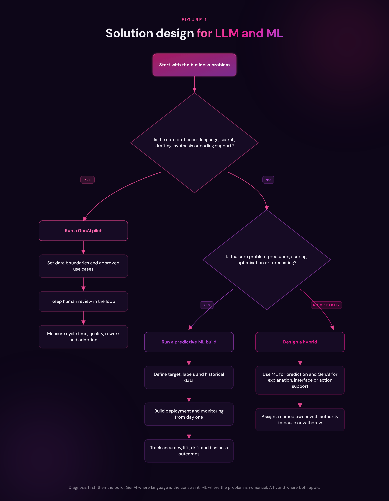
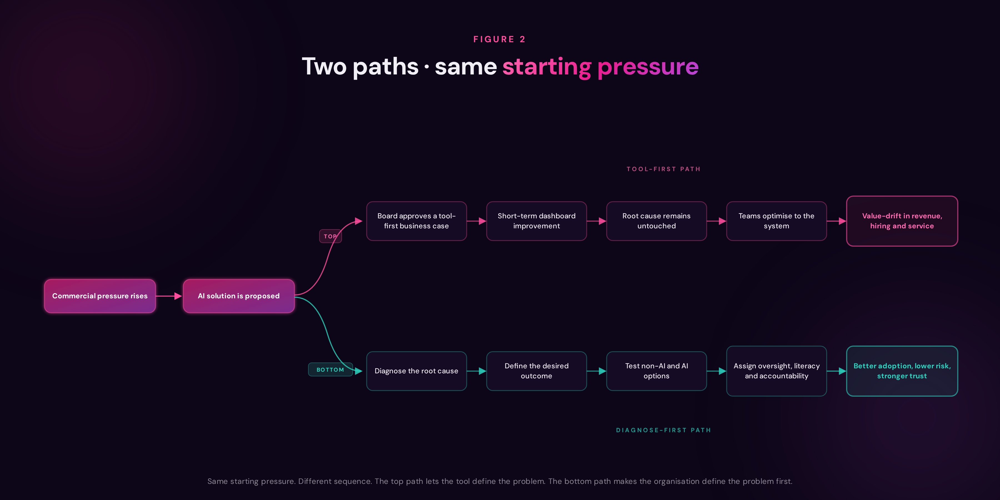

The biggest risk AI poses to business is not the dramatic story we keep returning to. It is not the sudden disappearance of white-collar work, or the overnight replacement of teams by machines. That version is easy to see, easy to debate, and easy to resist. The more serious risk is quieter.
AI is not waiting for permission anymore
It happens while the organisation still looks normal from the outside. The sales team is still selling, the hiring team is still screening, the customer team is still serving, and the finance team is still forecasting. But underneath, the logic of the business has already started to move.
A lead score changes, and suddenly sales attention shifts toward a different kind of customer. A CRM recommends the next action, and account managers begin to trust the prompt more than the conversation. A hiring system ranks candidates, and the organisation slowly narrows its definition of talent without ever having that debate. A forecasting tool produces a cleaner-looking number, and the room becomes less curious about the assumptions behind it.
None of these moments feels like a major strategic decision. That is exactly why they matter.
AI rarely walks into the business as a revolution. It arrives as a default.
The five-minute version for busy executives
If you read nothing else, read this
Inside most organisations today, AI is already shaping decisions. Not dramatic decisions. Quiet ones. It is influencing which leads matter, which customers are worth saving, which candidates get a closer look, which reps appear to be winning, and which ideas are amplified in a meeting summary.
None of these decisions feel like decisions. They feel like defaults. That is exactly why they matter.
The real risk is not that AI replaces the white-collar horses overnight. It is that, while leaders still see humans pulling the cart, the road network, the speed limits, and even the destination are increasingly shaped by machinery they have not fully inspected.
The next 90 days do not need to become a grand operating-model transformation. But they should create three basic disciplines: see clearly where AI is already shaping revenue, employment, and customer experience; learn deliberately by building genuine AI literacy across leadership, revenue, HR, legal, and frontline teams; and govern lightly but seriously, with a simple rhythm that pressure-tests AI proposals for root cause, risk, ownership, and alternatives before approval.
The evidence is no longer anecdotal. McKinsey's 2025 global survey put AI use in at least one business function at 78% of responding organisations. Microsoft and LinkedIn found 75% of knowledge workers worldwide were already using AI at work. Adoption is not the future state. It is the current condition.
Do that, and leaders keep their right to choose. Skip it, and the choice slowly gets made without them.
What is missing in most of those organisations is a sense of cost. IBM's 2025 Cost of a Data Breach Report found that organisations with high levels of shadow AI carry a $670,000 premium on every breach, take 247 days on average to detect those incidents, and that only 37% have any policy in place to govern AI usage at all. Forrester goes further. It expects more than half of all layoffs attributed to AI to be quietly reversed, the result of decisions made under pressure rather than through diagnosis. The risk is not theoretical. It is already in the numbers, just not always in the boardroom.
Read it with your AI
No time for the full piece? Pick your role, then pick your AI. We will hand it the article and a prompt shaped for you.
Read The White-Collar Horse and summarise it in 200 words for a Chief Revenue Officer. Extract the three places this matters most inside their revenue engine this week. End with one question they should ask their leadership team on Monday.
We use AI to help leaders prepare. We do not use it to replace judgement.
The horse that did not know the car was coming
For most of the nineteenth century, the horse was the engine of the economy. It pulled ploughs, carriages, trams, and freight. Whole cities were designed around it. Power was visible. Whoever held the reins, led.
Then the car arrived.
The horse did not vanish the next morning. For decades, the two shared the road. But during those decades, something more important than the horse changed. The road network changed. The rules changed. The destinations changed. The economics of a city changed. By the time the shift became obvious, the old system was already gone.
Today, white-collar work is the horse. Not because it is weak, doomed, or expendable, but because it sits at the centre of a system that is quietly being redesigned around it.
There is one important difference. The horse had no rights, no voice, and no choice. The white-collar worker has all three. That is the most important line in this argument.
This is not a story of replacement. It is a story of redesign, and of who gets to hold the pen.
The real issue is not replacement. It is redesign.
This is where many leadership conversations about AI are still too shallow. We keep asking whether AI will replace people, when the more urgent question is whether AI is already redesigning the work around them.
Replacement is visible. Redesign is harder to notice.
It changes what gets prioritised, what gets measured, what gets rewarded, and eventually what the organisation learns to value. For revenue leaders, this is not a theoretical concern. Revenue organisations are full of mediated decisions: lead scoring, campaign targeting, pipeline inspection, churn prediction, pricing, customer success prioritisation, sales coaching, and performance management.
When AI enters those workflows, it does not simply make them faster. It changes their centre of gravity.
The hidden risk is value-drift in the revenue engine
There is a name for what is happening inside many organisations right now.
We would call it value-drift in the revenue engine: the slow shift in what "good" looks like inside the company because AI-mediated workflows are steering behaviour before leadership has consciously decided what behaviour to reward.
Value-drift is not loud. It does not announce itself in a board paper. It shows up as small, reasonable-looking changes. Lead scoring quietly favours the segments that click fastest, not necessarily the ones with the healthiest long-term revenue. Outreach becomes more personalised, more frequent, and more persuasive, while drifting a little further from the brand the company thought it was building. Customer success plays tilt toward automated touches that look excellent on dashboards but feel thinner to the customers who matter most. Hiring and performance signals begin to lean on AI-interpreted metrics, and the profile of "who succeeds here" narrows in ways no one ever decided out loud.
Each change is defensible on its own. Together, they move the centre of gravity of the business. The horses still pull the cart, but the road has changed underneath them.
Picture a CRO at the end of Q2. Activity is up. Proposals are out faster than ever. The dashboard looks healthier than it has in two years. Yet win rate has slipped four points, average deal size has thinned, and the forecast is consistently 12% more optimistic than the close. The lead score has quietly narrowed the definition of an ideal customer. The CRM is recommending faster follow-ups in deals that needed slower ones. The forecast tool is rewarding pipeline volume in a quarter that needed pipeline quality. Each individual change passed an internal review. Together, they are reshaping what the revenue engine is optimising for. Nobody decided this. The system did, on the organisation's behalf.
That is why value-drift is more dangerous than a visible failure. A business does not usually decide to become more transactional. It gets there through hundreds of small optimisations. Over time, the organisation is still busy, still productive, still hitting some numbers, but it may be drifting away from the value it thought it was protecting.
What is actually happening inside organisations today
If you walk the floor of almost any mid-to-large company right now, you will find the same pattern.
AI is everywhere and nowhere. It is embedded in the CRM, the inbox, the helpdesk, the project tool, the hiring platform, and the forecasting stack. Employees are using GenAI to draft, summarise, analyse, prepare, decide, and prioritise, while predictive models and scoring systems are quietly shaping what gets surfaced, ranked, flagged, or ignored. Gallup has found that about half of employed American adults now use AI in their role at least a few times a year, which means the issue is no longer whether AI will enter the workplace, but whether leadership can see where it has already entered.
And yet, ask three executives in the same company what their AI strategy is, and you may get three different answers. Ask frontline employees whether they have clear guidance on how to use AI, and many will tell you they are still improvising. That gap is visible in the numbers too: Microsoft and LinkedIn reported that 60% of leaders worry their organisation lacks a plan and vision for AI implementation, while Gallup found that most employees still do not have clear guidance or policies for AI use at work.
This is the gap the horse analogy exposes so cleanly. The engine has arrived. The road has not been redesigned. The drivers have not been trained. The traffic rules are still being written. And the horses keep pulling.
The problem is not that AI is absent. The problem is that it is already inside the operating system of the business but often owned nowhere. It is purchased by one function, configured by another, used by a third, and governed by no one with a full view of the consequences.
We also need to stop saying "AI" as if it means one thing
There is a small joke hidden in the language: LLM is only one letter away from ML. Unfortunately, that extra letter is where many business cases start to wobble. Leaders talk about AI as if it were one technology with one business logic. It is not.
At minimum, business leaders need to separate two very different machines: generative AI, driven largely by large language models or LLM, and traditional machine learning or ML, built around prediction, classification, optimisation, and statistical learning from structured or semi-structured and enriched data.
They belong to the same broad family, but they behave differently, fail differently, and create value differently.
Generative AI feels immediately useful because it speaks the language of work. It drafts the proposal, summarises the call, rewrites the email, searches the knowledge base, prepares the briefing, explains the document, and helps the employee move faster through language-heavy tasks. It is accessible, affordable, and easy to pilot. That is why it has spread so quickly.
It lowers the barrier to experimentation because the interface is natural language. You do not need a data science team to see the first productivity gain. For many organisations, this is the first time AI has felt usable by everyone, not just by specialists. The economics have reinforced that feeling: Stanford HAI reported that the cost of querying a model with GPT-3.5-level capability fell by more than 280 times between late 2022 and late 2024. That kind of collapse in access cost explains why pilots spread faster than governance.
Traditional machine learning plays a different game. It is less glamorous, less conversational, and usually more demanding to build. But when the business question is predictive, numerical, repeatable, or commercially consequential, it is often the more serious tool. McKinsey's work on AI value makes this point clearly: while GenAI opened a new frontier for language, synthesis, and unstructured work, traditional analytics and ML remain central to predictive modelling and numerical optimisation.
If the question is which customers are likely to churn, which accounts are under-forecasted, which transactions look suspicious, which products are likely to run out of stock, or which demand pattern is emerging, prompts are not the answer. You need data, labels, model design, evaluation, monitoring, drift detection, and clear ownership.
It takes longer because the work is deeper. Google Cloud's production guidance makes the operating reality plain: serious ML work involves data preparation, training, deployment, serving, orchestration, artefact management, and monitoring. But when done properly, it becomes an operating asset, not just a productivity layer. The optimum outcome for the enterprise is not to choose between LLM and ML as if one must replace the other. It is to deploy LLM-based agents that can communicate, reason, and guide the user experience, while being equipped with ML tools and functions that provide the predictive evidence, scoring logic, and analytical discipline behind the answer. That is where AI starts to become more useful and more governable: the LLM explains and orchestrates, the ML model predicts and validates, and the enterprise can produce results that are not only faster, but more transparent, responsible, and explainable.
This is what that looks like in practice. Every AI initiative begins at the same point. What is the business problem. From there, the shape of the problem decides the shape of the build. Language, search, drafting, and synthesis problems belong to GenAI, with human review in the loop and measurable boundaries around what the model is allowed to touch. Prediction, scoring, optimisation, and forecasting problems belong to machine learning, with targets, labels, historical data, and monitoring from day one. Problems that sit across both belong to a hybrid design, with ML producing the prediction and GenAI providing the explanation, the interface, or the next action. In every case, ownership is not left until later. A named human has the authority to pause, retrain, or withdraw the system from the moment it goes live.

The value of the flow is not the diagram. It is what the diagram refuses to allow. A proposal cannot skip from "we have a problem" to "we have bought a tool" without passing through diagnosis. It cannot hide a hybrid as a pilot. It cannot approve an AI system without naming a human owner with real authority to intervene.
In a market full of vendor-led approaches, that discipline is what separates an organisation that is using AI from one that is being used by it.
This is where the distinction becomes more than a technical detail. It becomes a leadership test.
A large language model can sound confident while being wrong. A predictive model can look precise while slowly degrading as the market changes. NIST's GenAI profile warns about risks that are either novel to, or amplified by, generative systems, including opaque third-party components and broad downstream reuse. On the ML side, production teams worry about drift, skew, and performance degradation over time. Put the two together with discipline, and the enterprise gets something stronger than either can deliver alone. Put them together lazily, under the vague banner of "AI", and the business starts approving systems without understanding the judgement, governance, and measurement each one requires.
That is the category error. Not choosing the wrong technology once but allowing the wrong technology to teach the organisation what a good decision looks like.
The most dangerous boardroom habit in 2026
This is also why leaders must slow down before they speed up. A slow start does not mean losing the race when it is guided by a data-driven, well-planned strategy.
Here is the part every CEO, CRO and board member needs to hear.
The single most dangerous habit taking hold in leadership teams right now is presenting AI as the answer before the problem has been properly diagnosed.
It is an easy habit to fall into. The pressure is real. Pipelines are tight. Efficiency targets are rising. Every competitor slide deck has "AI-first" somewhere on it. And so, a well-intentioned leader builds a business case that starts, quietly, from the conclusion: we will deploy AI. Now let us find the problem it solves. Forrester has warned that over-automating roles because of AI hype can trigger costly pullbacks, reputational damage, and weaker employee experience. That is what happens when AI becomes a justification before it becomes a diagnosis.
This is how organisations spend millions treating a symptom while the root cause compounds beneath the surface. A proposal arrives with a vendor name, a use case, a productivity estimate, and a promise of efficiency. But the deeper question has not been answered.
What is the root problem?
Is the sales team slow because of admin load, or because the proposition is unclear? Is the forecast weak because the model is poor, or because the pipeline discipline is broken? Is customer churn a prediction problem, or a value-delivery problem? Is hiring inefficient because screening is slow, or because the organisation has never properly defined the talent it needs?
Translated for the boardroom: the business case is not the diagnosis. Too often, it is a treatment in search of a disease.
When the wrong kind of AI is applied to the wrong kind of problem, the damage can look like progress at first. The process moves faster, the dashboard looks cleaner, and the output feels more impressive, but the business may simply be automating the confusion it should have stopped to understand.
That is the trap.
The questions a serious board should ask
There is a simple, respectful way to interrupt this pattern. Change the first question the board asks when an AI proposal lands.
Not: how much will it save us?
But: what problem are we actually trying to solve, and what tells us this is the right intervention?
A serious AI approval conversation should ask what the root cause is, and how the organisation knows. It should ask which non-AI options were considered, and why they were rejected. It should ask which parts of the problem this initiative will not touch. It should ask where the system sits in the EU AI Act risk classification, and what level of oversight that requires. It should ask how leaders will know, early, if the initiative is treating a symptom rather than the cause. And it should ask who has the authority to suspend, reverse, or redesign the system if it underperforms or drifts.
None of these questions are hostile. They protect the organisation, and quietly, they also protect the executive proposing the initiative.
Why this matters more than any single AI decision
When AI is approved as a cure without a diagnosis, three things tend to happen, almost always in this order.
Dashboards improve. Output goes up. A few leaders take a victory lap.
The weak ICP, the unclear positioning, the broken coaching culture, the shaky data foundations, or the poor process discipline were not touched. They keep producing the same problems, now wrapped in more automation.
Because the tool is now embedded, behaviour bends around it. People optimise for what the system rewards. Leaders defend the initiative they championed. The original problem quietly becomes harder to discuss.
This is value-drift at the decision level. It is how a company stops solving problems and starts justifying tools. For revenue leaders, this may be the threat to long-term revenue health that many boards are still not tracking.
Two paths open the moment commercial pressure lands on the desk. Both start from the same place. They end in very different organisations.

The difference between the two paths is not talent, budget, or technology. It is sequence. The top path lets the tool define the problem. The bottom path makes the organisation define the problem first, then chooses the instrument. Every senior revenue leader has seen both happen. The question is which one the next approval will follow.
That is why short-term gains can be misleading. A team may produce more proposals, but win rates may not improve. A service function may respond faster, but customer trust may weaken. A sales organisation may increase activity but lose the texture of real account intelligence. A forecast may become more polished, but not more truthful. Productivity is useful, but it is not the same as progress.
Used well, AI can reduce noise, improve prioritisation, support better coaching, identify risk earlier, and help teams spend more time on higher-value conversations. Used badly, it can flatten judgement. It can make teams chase what is easy to score. It can reward short-term conversion over long-term account health. It can standardise outreach until the brand sounds efficient but lifeless. It can turn customer understanding into a sequence of system-generated next steps.
Win rate tripled. Average order value up 74%.
One European SaaS CEO rebuilt the revenue engine around a clearer ICP, sharper qualification, and AI used to validate judgement rather than replace it. The technology stack barely changed. The questions the leadership team asked of it changed completely.
The danger is not that people stop working. The danger is that they start working for the logic of the system without noticing.
AI changes behaviour
This is the behavioural side of AI transformation, and it is still under-discussed.
Once AI systems become part of the workflow, people adapt to them. Salespeople learn which activities the system recognises. Managers learn which metrics look better in the dashboard. Recruiters learn which profiles pass the filter. Customer teams learn which cases are prioritised.
Over time, employees optimise their behaviour around the machine's definition of success. We have already seen a version of this story play out in public. Social media algorithms did not simply recommend content; over the last two decades, they gradually trained people to post, react, argue, perform, and measure themselves in ways that satisfied the platform. The same behavioural pattern can enter the enterprise, only this time through sales scores, hiring filters, service priorities, and performance dashboards. This is not because employees are careless. It is because every operating system teaches people what matters. If leaders do not define that deliberately, the tools will define it by implication.
Governance is now a leadership discipline
That is why governance and AI literacy are no longer optional technical topics. They are leadership responsibilities.
Governance does not mean slowing the business with committees and documents that no one reads. It means knowing where AI is being used, what kind of AI it is, what decision it influences, what data it depends on, what risk it introduces, who owns the outcome, and when a human must challenge or override it.
AI literacy does not mean turning every employee into a data scientist. It means giving people enough understanding to know when they are using a language model, when they are relying on a predictive score, when the output needs review, and when the tool should not be used at all.
The AI Act as a gift to serious leaders
Many executives still read the EU AI Act as a brake. It is more useful to read it as a gift.
The Act is, in effect, a formal demand that organisations do what great leadership teams should already be doing: know where their AI systems are, classify their risk, document how they work, keep humans meaningfully in the loop, and make sure the people operating them understand what they are doing. Its AI literacy obligations have applied since 2 February 2025, and the wider high-risk regime should be treated by leaders as an operating deadline, not a distant legal abstraction.
That shift matters because it reframes AI as a managed system, not a clever tool. For high-risk systems, the direction of travel is clear: human oversight, risk classification, documentation, and advance awareness where AI is deployed in consequential workplace contexts. In a world drifting toward tool-first thinking, the Act is one of the few external forces pushing organisations back toward diagnosis, discipline, and design.
Treat it as a floor, and it becomes bureaucracy. Treat it as a design principle, and it becomes a competitive advantage in talent, trust, and resilience.
What this asks of revenue leaders
This is, in the end, a leadership story. Not a technology story.
The real management move now is simple, but not easy. Stop buying AI in the singular. Map where AI is already influencing revenue, hiring, service, forecasting, pricing, performance, and customer decisions. Separate generative AI from predictive ML, and identify where the two should work together deliberately.
Require every new AI proposal to define the root problem before naming the tool. Assign a human owner who has authority not just to sponsor the system, but to question it, pause it, retrain it, or withdraw it. Define the measures that matter before the workflow starts teaching people the wrong ones. And give employees guidance that is practical enough to use, not slogans about innovation.
The leaders who will be remembered well from this decade will not be the ones who moved fastest. They will be the ones who moved most deliberately. They will protect people's agency while redesigning their work. They will refuse to approve AI as a narrative and insist on AI as a diagnosis. They will build AI literacy into the bones of the organisation, not as a course but as a habit. They will use the EU AI Act as a framework for clarity, not a checklist for compliance. And they will treat value-drift as a real boardroom-level risk, inspecting the machinery before it reshapes the city.
The numbers make the point uncomfortable but useful: AI is already widely adopted, workers are already using it, leaders already worry they lack a plan, and guidance is still missing in too many organisations. That combination is not innovation maturity. It is an operating-risk signal.
The best organisations will not be the ones that automate fastest. They will be the ones that remain most deliberate about what they automate, what they augment, and what they refuse to outsource. They will use GenAI where language, synthesis, and speed create value. They will invest in ML where prediction, optimisation, and repeatable decision quality matter. They will combine both where the business case genuinely requires it, allowing ML to produce the signal and GenAI to support the human interface around it.
But they will not let either one quietly redefine the business without leadership consent.
Keep the pen in your own hand
The horse did not get to choose the terms of its obsolescence. The modern white-collar worker does. And the leaders of this generation get to choose whether that choice is made in the open, with care, craft, and conviction, or quietly, one uninspected workflow at a time.
You do not need to change everything this quarter. You do need to see clearly, learn deliberately, and govern with intent. That is how leaders keep the pen in their own hand.
That is how the horses keep pulling with pride, the cart keeps moving, and the road, this time, is one the organisation actually chose.
If you would like to see what value-drift looks like inside your own revenue engine before it shows up in the forecast, that is the conversation we run in the first week of a Full Revenue Diagnostic. It is the cleanest way we know to map where AI is already shaping decisions in your business, and to decide, deliberately, which of those decisions you want to keep making yourself.
Forwarding this to someone? Send the prompt too.
Pick the role of the person you are sending it to. Copy the prompt, or send them straight to their AI with the prompt loaded.
Read The White-Collar Horse and summarise it in 200 words for a Chief Revenue Officer. Extract the three places this matters most inside their revenue engine this week. End with one question they should ask their leadership team on Monday.
We use AI to help leaders prepare. We do not use it to replace judgement.
The hidden cost of ungoverned AI in your revenue engine
A one-page financial brief for the CFO. Three P&L lines where value-drift shows up, the exposure numbers that are not on any line item, and five questions to ask your CRO or CIO.
Open the CFO brief For your board or NEDAI and the board's fiduciary view
A one-page brief for a non-executive director. A plain-English risk matrix, six questions to table at the next board meeting, and a minutes-ready paragraph for the risk committee.
Open the NED brief